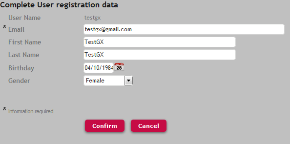

When the registration of a new user fails because some required data is missing, some actions are triggered automatically in GAMExampleLogin object when the user logs in for the first time. In general this happens with users registered with external GAM Authentication Types (not local). The following code in GAMExampleLogin object is triggered in Refresh event, in order to call a registration form which asks the user to enter the missing data in order to finish the registration process.
(*) If &ErrorsLogin.Count > 0
If &ErrorsLogin.Item(1).Code = GAMErrorMessages.UserMissingRequiredData
//Webpanel to Complete User data
GAMExampleUpdateRegisterUser.Link()
&isRedirect = True
Else
&UserPassword = ""
&Errors = &ErrorsLogin
Do 'DisplayMessages'
Endif
Endif
GAMExampleUpdateRegisterUser is a web panel which is distributed with the GAM Examples library, and builds up a form in runtime where a field is shown in the form for each required data which is missing. ExampleIn case of Twitter Authentication Type, when the user logs in to the application for the first time, the email of the user is not part of the information sent by Twitter to the application. Suppose that the the repository configuration includes the following:
In this case when the user logs in for the first time an error would be thrown because some of the required data is missing (the user email in this particular case). By executing the code shown above (*) the error is caught and the GAMExampleUpdateRegisterUser web panel is called so the user can enter the missing data and finish the registration process. See GAMExampleUpdateRegisterUser web panel code. It can be changed as desired in order to follow the user needs.  Figure 1. GAMExampleUpdateRegisterUser form at execution time
|